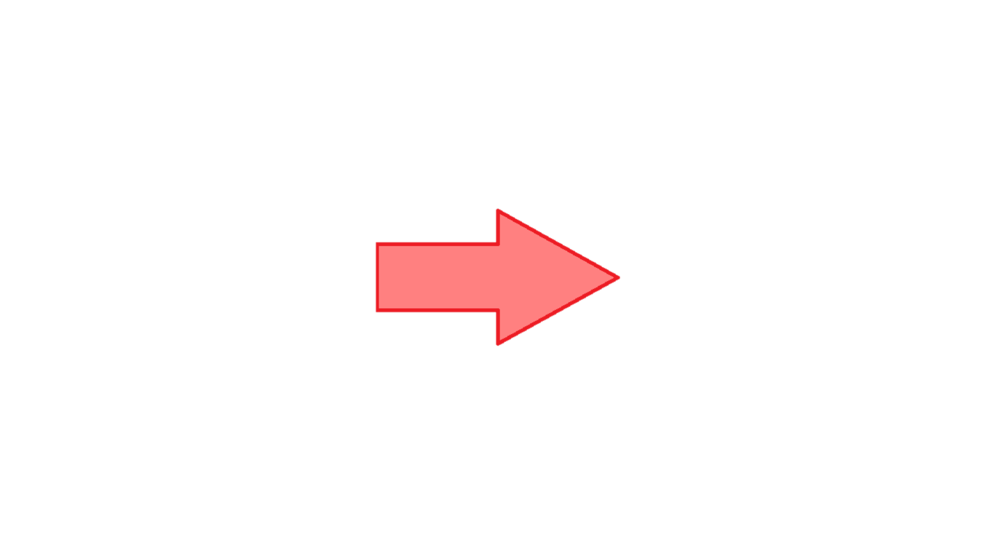
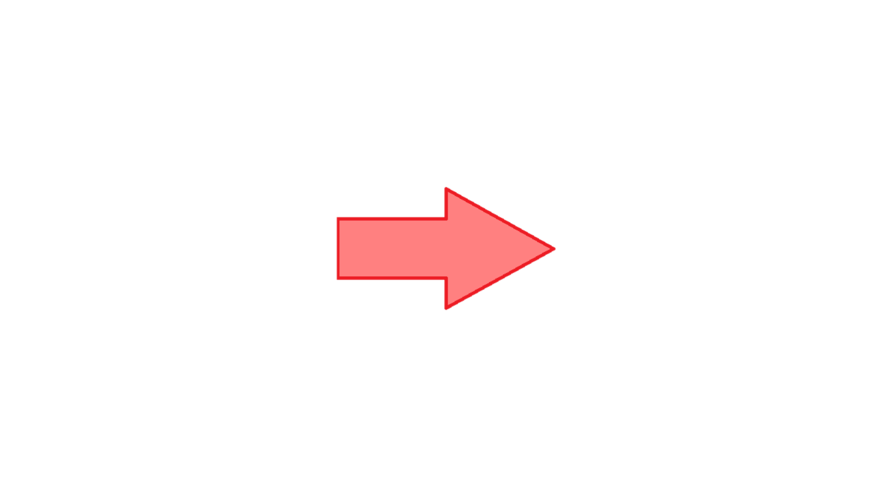

Puncte de continuitate. Puncte de discontinuitate:
Prelungirea prin continuitate a unei funcții:
Exemplu:
Continuitatea laterală:
Criteriul de continuitate cu limite laterale:
Teoremă:
Clasificarea punctelor de discontinuitate:

 
